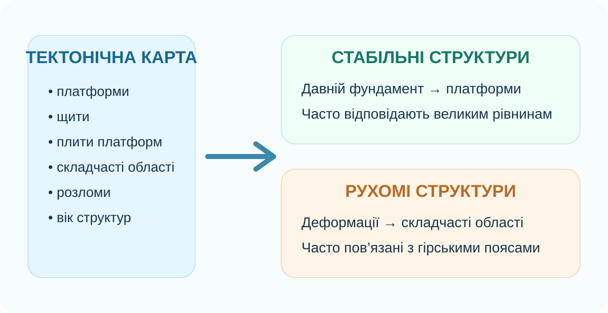
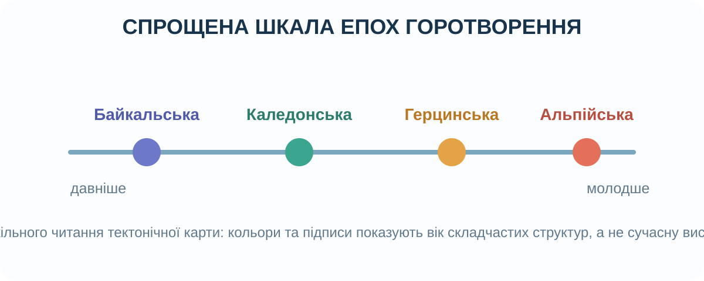

1. Почніть із загадки
Чому сильні землетруси й вулкани не розподілені по Землі випадково? Перед поясненням сформулюйте гіпотезу.
Активні ділянки тяжіють до меж літосферних плит.
Вони рівномірно розсіяні по материках.
Їхнє положення визначає лише клімат.
2. Реальна карта плит USGS: знайдіть закономірність

Джерело: U.S. Geological Survey, Earthquake Hazards Program. Межі плит показують зони розходження, зближення та горизонтального зміщення.
3. Тектонічна карта — не те саме, що карта плит

Карта літосферних плит
Показує сучасні великі блоки літосфери та їхні межі.
Тектонічна карта
Показує будову земної кори: платформи, щити, плити платформ, складчасті області, розломи та вік структур.
Ключова ідея: тектонічна карта читає не лише сучасний рух, а й геологічну історію території.
4. Інтерактив «Платформа чи складчаста область?»
Оберіть найкращу інтерпретацію для кожної ознаки.
5. Дані сейсмічності: перевірте гіпотезу
Відкрийте інтерактивний IRIS Earthquake Browser і ввімкніть межі плит. Оберіть глобальний масштаб та подивіться, чи формують епіцентри пояси.
IRIS/EarthScope: глобальна база сейсмічних подій із можливістю накладання меж плит.
6. Епохи горотворення: карта як архів

На шкільних тектонічних картах області часто розрізняють за віком складчастості. Це дозволяє порівнювати давні зруйновані гірські системи з молодими горами, які ще активно піднімаються.
Сильніше денудовані, часто вирівняні; можуть бути основою старих платформ.
Каледонська й герцинська — важливі етапи формування багатьох старих гірських систем.
Молоді гори Альпійсько-Гімалайського поясу, значна сучасна тектонічна активність.
7. Коротке відео: механізм руху плит
MinuteEarth, «Plate Tectonics Explained» — коротке пояснення механізмів руху плит. Після перегляду випишіть один механізм і один доказ, який згадується у відео.
8. Теорія після дослідження
Платформа
Велика відносно стійка ділянка земної кори з давнім фундаментом. На щитах фундамент виходить на поверхню, на плитах перекритий осадовим чохлом.
Складчаста область
Територія, де породи були інтенсивно деформовані тектонічними рухами. Молоді складчасті пояси часто збігаються з гірськими системами й активними межами плит.
Тектонічна карта
Карта будови земної кори та віку її структур. Вона допомагає пояснювати рельєф, сейсмічність і закономірності поширення частини корисних копалин.
Сейсмічні пояси
Великі зони концентрації землетрусів. Їхня конфігурація значною мірою пов’язана з межами літосферних плит.
9. CER — доведіть твердження
Твердження: «Розміщення сучасних землетрусів допомагає відновити межі літосферних плит і зрозуміти тектонічну будову Землі».
10. Домашнє завдання
Опрацюйте тему про тектонічну карту світу в підручнику Гільберг Т.Г., Довгань А.І., Совенко В.В. «Географія, 7 клас» та в атласі. На контурній карті позначте два великі давні платформні регіони й два молоді складчасті пояси; для кожного запишіть одну ознаку, за якою ви його визначили.